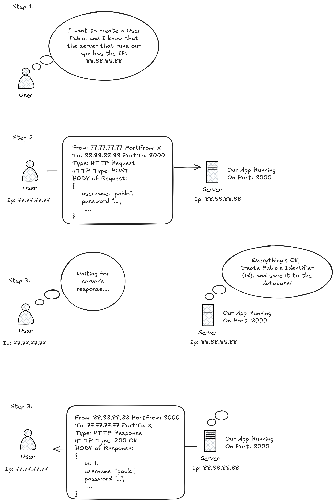
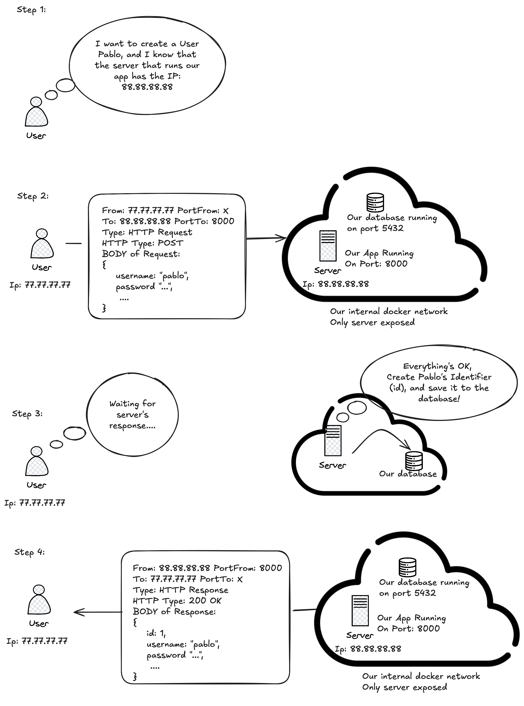

Pràctica 04: Dockerització i Orquestració d’una API a AWS
Unitat 5 · Administració i Manteniment de Sistemes i Aplicacions (AMSA)
Aquesta pràctica ha estat desenvolupada pels professors de Lleida, i enguany la fareu als dos campus:
- Ferran Aran Domingo
- Oriol Agost Batalla
- Pablo Fraile Alonso
En part es tracta d’una competició amistosa entre els dos campus per veure qui ho fa millor!
1. Introduction
The objective for this assignment is to dockerize and orchestrate a provided API.
We’ve created an HTTP Server API, a program that communicate between different applications by defining clear rules for how data is requested, sent, and received.
There are lots of different behaviours for APIs (and we’ll explain how ours works in the sections bellow), but they will typically have:
- Endpoints: An API endpoint is a dedicated URL that provides access to a specific resource. For instance, the /articles endpoint in a blogging app would return all the articles of the server.
- Method: The request’s method indicates the type of operation the client would like to perform on a given resource. REST APIs are accessible through standard HTTP methods, which perform common actions like retrieving, creating, updating, and deleting data.
- Parameters: Parameters are the variables that are passed to an API endpoint to provide specific instructions for the API to process. These parameters can be included in the API request as part of the URL, in the query string, or in the request body. For example, the /articles endpoint of a blogging API might accept a “topic” parameter, which it would use to access and return articles on a specific topic.
- Request body: The body is the main part of the request, and it includes the actual data that is required to create, update, or delete a resource. For instance, if you were creating a new article in a blogging app, the request body would likely include the article’s content, title, and author.
The objective of this activity is to dockerize and deploy to AWS our API, while also learning about databases in the way.
2. Delivery
Accept the assignment in Github Classroom, following the link
To complete this activity, you must do the following for each sub-delivery (PRAC-4.1, PRAC-4.2, PRAC-4.3 and PRAC-4.4):
Deliver a link to your Github repository on the virtual campus activity.
Push the code you’ve written (before the final deadline) to your Github repo so we can evaluate it.
Remember that we’re only going to evaluate your assignment after the final deadline, but following the recommended tempos and pushing each part of the activity accordingly can grant you extra points.
3. Outline
This activity is split onto 4 incremental parts, which are going to be related to the contents explained during the different classes.
- On the first week, your job will be to “dockerize” the API.
- On the second week, your job will be to communicate the API with a postgresql database using docker-compose on your local PC.
- Then, we’ll want you to deploy the API to AWS.
- Finally, after having explained the AWS Relational Database Service (RDS), you’ll connect the ECS service to your newly created RDS database.
4. Resources
Since building the users API yourself is outside the scope of this subject, the teachers have prepared some helpful resources to make the activity quicker and more enjoyable. This way, you can focus on the fun parts: containers and AWS services!
Repository template
When you join the Github Classroom activity with the link provided on Step 2, a remote repository is automatically created for you to work on this assignment. This repository will already contain all the python code of the API, below are the details of what comes with the repo:
It has everything needed to serve the API.
A
README.mdfile where you’ll have instructions on how to set up the python environment.
Understanding the API
How does our API work? First, you have to setup your environment and start the server, see section 6.
By default, the server listens for HTTP connections on port 8000. Be aware that, this means that if you’re running it on your pc (without any container), you can access it via http://localhost:8000 on your browser. If you’re running it on a conainer, you’ll need to map the port of the container to your host so you can access it on your browser (see how to map it on our reference cheatsheet).
The API, exposes three “endpoints”, let’s see them:
(
GET /docs) Documentation: Returns an html file (the type of files that your browser knows how to show/paint on the screen), that allows us to easily call the other two endpoints of the API. 1(
POST /users) Create a user given:- A username
- A name
- A role (“user” or “admin”)
- A password
(
GET /users) List all existing users
If you want to see the documentation and “play” with the /users endpoints, you can access http://localhost:8000/docs 2 This will allow you to create users with POST http://localhost:8000/users, and then retrieve the information with GET http://localhost:8000/users, nice!
If it still didn’t make clear what an API really is watch the hardvard cs50 http class, and then think that:
- The
/docsendpoint is just the same as the “facebook” example they show, it returns text inhtmlformat. - The other two endpoints, (
POST usersandGET users) receive and return text in the json format, nothtml.
The database
You’ll switch and explore the databases on PRAC-4.2! Although it is recommended that you try to understand them now, so you can “more or less” see, how our service works!
Our app needs a way to save the users information! We save it on a database, and we want to choose between different databases 3 :
By default, it uses an internal sqlite, which just uses a “raw” file as the database. This means that it doesn’t connect to anything, it just saves the information to an “optimized” file, and that’s really it.
If the
PRODenvironment variable is set 4 , then it will attempt to connect to a postgresql database. This database is another “service” on his own, that exposes a port (by default 5432), where you can connect and send values to be saved. Of course, not everyone should connect to this database, only the people with a valid username and password, that’s the reason behind that, when you create a postgresql database, you need to tell it the user and password that you want!
Once we have an instance of postgresql running, we can tell the users api to use this instance instead of the sqlite one (This will be a requirement on Prac-4.2!). So, we’ll have to tell him the following information via environment variables:
PROD: Set it to true if you want to use a postgresql instance.DB_USER: The user who will connect to the databaseDB_PASSWORD: The password to connect to the databaseDB_HOST: The IP address of the host of the databaseDB_PORT: The port of the host of the databaseDB_NAME: The name of the database inside postgresql
Brief summary
A brief summary of how the app works is shown below (using user creation (POST /users) as an example): 
Keep in mind that if you’re running everything on localhost (which is likely the case for PRAC-4.1 and PRAC-4.2) the IP address used in the example figure will be 127.0.0.1, or simply the domain name localhost. In this setup (PRAC-4.1 and PRAC-4.2), your machine acts as both the server and the client.
5. Tasks
Prac-4.1: “Dockerizing” the API
Your main objective is to “dockerize” the API. That’s it, we keep it simple this week. So you should write a Dockerfile to run the users API http server inside a container. The rules are the following:
- Keep in mind that the command you must run inside the Docker container is uv run fastapi run, and that dependencies must be synced before (this means the virtual environment should be created before doing the
uv run). - You must only use the sqlitedb database! This means that, in prac-4.1, you don’t have to
docker runwith custom env variables, just the default ones!. - Remember to map the container’s port to a port on your host machine, otherwise, the server will remain isolated inside the container and you won’t be able to access it from your host.
- If you have any questions about what you’re allowed to do in the Dockerfile, please ask the teachers.
Your goal should be to make the resulting image as small as possible, as that’s what good developers should do!
The current record for the smallest image achieved by a Lleida student is 220 MB! Can you beat it?
Prac-4.2: Moving to Docker Compose
Your objective is to switch the API’s db to a postgresql, and communicate it through Docker compose
- Move the dockerized image onto a compose service. This should be a straight-forward step.
- Deploy a postgresql database on the compose. Don’t stress on joining them yet!
- Now it’s time to communicate them.
- Lastly, make sure that the database persists the information even if the container is removed.
The resulting file should be a docker-compose.yml with both services and their respective configuration.
The topology should be something like this: 
You can see the logs of the container for asserting that it is using the PostgreSQL database (you can see the code that does this here ).
Also, you can connect to the database and query the tables! See this cheatsheet for connecting and querying postgresql
Feel free to use PostgreSQL 18 or 18.1 (there’s no meaningful difference for our use case).
Prac-4.3: Using AWS ECR and ECS
No worries! We’ll upload it as soon as the date arrives. 🚧⛏️👷
Prac-4.4: Merging it with AWS RDS!
No worries! We’ll upload it as soon as the date arrives. 🚧⛏️👷
6. Setting up the server!
Cloning the repository and set it up:
Remember that, once you entered the Github Classroom on section 2, you will have to clone your repository with:
git clone <ssh_address_of_your_git_repository>Then, setup a virtual environment for the python project, which can be done with:
uv syncNow, you’re ready to run the users api server, do it with:
uv run fastapi run7. Evaluation
Your final score will come from various parts:
- 4.1: Docker → 15%.
- 4.2: Docker-Compose → 15%.
- 4.3: ECR & ECS → 15%.
- 4.4: RDS → 15%.
- Best practices are used → 40%.
- How small is your Docker image?
- Is your compose deterministic?
- Does your compose expose more than needed?
- …
8. Rules
- It is forbidden to modify our python code (the given API). It has everything you need and there’s no need to modify it. If you feel like modifying the code would make something better, contact the teachers before doing so.
- In the
Dockerfilefor the user API, the dependencies must be installed in the Docker, not in runtime - If you are a group of 2, both of you must contribute to the repository with at least 1 commit.
9. Resources
10. Doubts
Please don’t hesitate to ask the teachers any doubts, there are no dumb questions, we’re here to help.
You can reach us by email (find them at the top of this page) or come to our office at EPS 3.07 (we’re here mostly during mornings).
Notes a peu de pàgina
The
http://localhost:8000/docswebpage, isn’t the only way to “test” the endpoints of the API. Our server exposes a connection http on the port8000, so any clients that support thehttpprotocol could be used instead. If you’re curious, you can use another client like for example postman (see video here) or if you want a cli tool that is installed on every linux distro, just use curl↩︎In reality, you could also access http://localhost:8000 instead of http://localhost:8000/docs, since it will automatically redirect you to
/docs, you can see the code of the server that does this↩︎A database is just a program that makes saving and retrieving data easy and fast. We could save our users inside a file named “users.txt”, ex:
1,pabloteach,Pablo Fraile,admin,4346%3450834 2,ori,Oriol Agost,admin,435-08345237 ...But, of course, this would be slow as f**k, that’s why we use databases.↩︎
If you don’t know what environment variables are (you should know it from the Operating Systems course), you can have a great explanation on the hpc-wiki↩︎